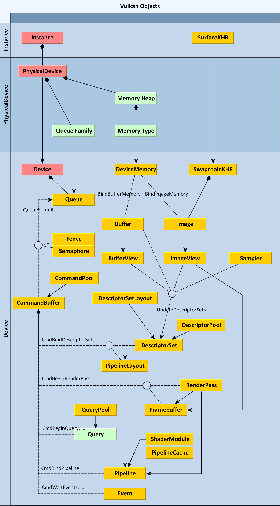

Vulkan API 梳理
整体概览

- 创建 Instance，这一步需要配置支持的 Layer 和 Extension 扩展功能；
- 创建 device 逻辑设备，这一步主要需要：物理设备 physical device、队列族 queue family、逻辑设备需要支持的扩展特性；
- 创建 swapChain 交换链，注意 surface 需要通过窗口库创建，然后根据 surface 和 physical device 查询 swapChain 支持的 图像格式 和 呈现模式，选择合适的呈现模式；
- swapChain 创建主要就是把 surface 和 graphic queue 连接起来，并且设置好 image 的格式、大小、数量、用途等，以及呈现模式、旋转模式、裁剪模式等 image 处理的内容；
- 从 swapChain 中获取对应的 VkImage 对象，并创建x相应的 ImageView；
- 创建 commandPool 和 queueFamily 关联；
- 创建 commandBuffer，从 commandPool 分配；
- 创建两个 信号量 semaphore，一个用来呈现完成后，通知图像 available，一个渲染完成后，通知可以用于呈现；
- Buffer 和 Image：
- createBuffer 创建 Buffer，并分配 memory 内存；
- createImage、createImageView 创建 Image 和 ImageView 对象，用于 color/depth/stencil attachment 和 texture 纹理对象；
- createSampler 创建纹理采样器；
- copyBuffer、copyImageToBuffer、copyBufferToImage，通过命令方式传输数据，其中对于 Image 对象的数据传输，需要先通过 transitionImageLayout，来转换图像布局 layout；
- 创建深度缓冲 createDepthResources；
- 创建纹理对象 createTextureImage；
- 创建顶点缓存 createTexturedVertexBuffer，注意这里是用的 storage buffer 实现的；
- 创建 Uniform 缓存 createUniformBuffers；
- 创建描述符分配池 DescriptorPool，其中主要分配 DescriptorSet 的数量，以及 Uniform Buffer、Storage Buffer 和 Image Sampler 的数量，注意这里每一个 swapChain 上的 framebuffer 都都一个单独的DescriptorSet，并且会影响其他资源乘以对应的数量；
- 创建 DescriptorSetLayout，描述资源布局；
- 根据 DescriptorSetLayout，从 DescriptorPool 中，创建 DescriptorSet，最后通过 vkUpdateDescriptorSets，将真正的 buffer 数据更新到 DescriptorSet 中；
- 创建 GraphicsPipeline 之前，先创建 PipelineLayout，PipelineLayout 主要描述 DescriptorSetLayout 和 PushContantRange，类似描述了函数的入参类型；
- 创建 RenderPass，RenderPass 主要描述三部分内容，重点是如何输出，类似函数的返回值类型：
- color、depth、stencil attachment description，描述在 RenderPass 整个前后的 layout 分别是什么，注意这里并未和具体 framebuffer 绑定；
- subpass，这里 subpass 会引用上述 attachment，并且在这个 subpass 中使用的 layout 是什么；
- SubpassDependency，用来描述 subpass 之间异步操作的依赖，同时对于 memory layout 的变换也很重要；
- 开始创建 GraphicsPipeline，设定以下部分：
- Vertext 顶点；
- Viewport 视角；
- Scissor 裁剪；
- Rasterizer 光栅化；
- MultiSampling 多重采样；
- Blend 混合；
- DepthAndStencil 深度测试、模板测试；
- DynamicState 动态状态；
- Tessellation 曲面细分；
- Shader；
- DescriptorSetLayout -> PipelineLayout；
- RenderPass；
- 创建 FrameBuffer，主要是将 RenderPass 和 SwapChain 中的 ImageView，以及深度缓冲的 DepthImageView 关联起来，注意：FrameBuffer 类似 DescriptorSets，只是用来组合 image 的，RenderPass 类似 DescriptorSetLayout 只是描述使用的 framebuffer 的格式；
到此，资源的创建完成，下面是如何将上述资源串联起来，完成一次绘制：
- vkAcquireNextImageKHR，获取下一帧可用资源；
- vkResetCommandPool 重置命令缓冲池；
- 更新 uniform 变量；
- 开始录制 command buffer：
- vkBeginCommandBuffer，开始录制 command，设置 command buffer 的使用频率；
- vkCmdBeginRenderPass，开始 renderPass，设置 renderPass、framebuffer、绘图区域、颜色\深度的清除值；
- vkCmdBindPipeline，绑定 pipeline，设定采用 graphic 管线；
- vkCmdBindDescriptorSets，绑定 DescriptorSet，这里需要传入 PipelineLayout，并且支持绑定多个 DescriptorSets；
- vkCmdDraw，发起 DrawCall；
- vkCmdEndRenderPass；
- vkEndCommandBuffer；
- vkQueueSubmit，提交命令，这里主要配置需要提交的 command、需要等待的信号量、绘制完成后命令发出的信号量；
- vkQueuePresentKHR，呈现绘制的图像，主要配置 swapChain 以及对应的 imageIndex，以及需要等待完成的绘制信号量；